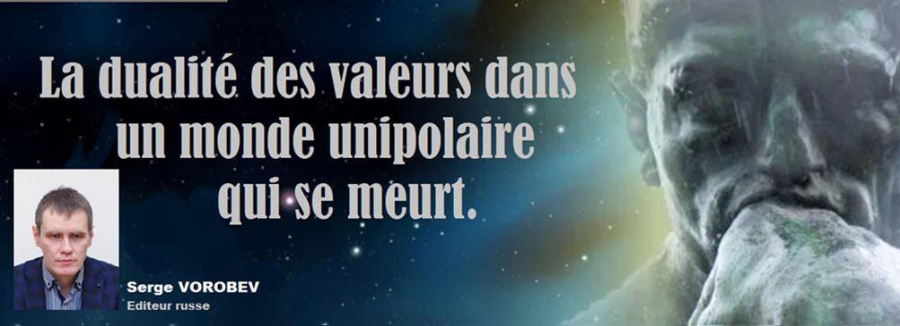
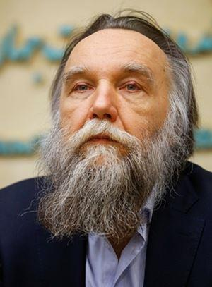
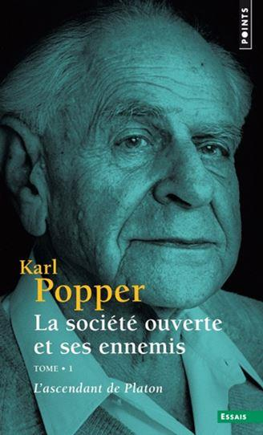
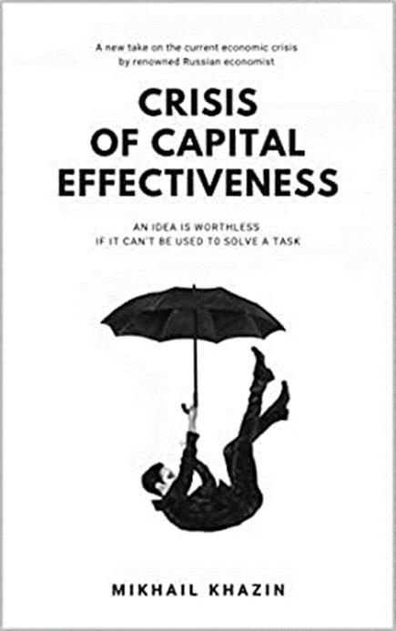
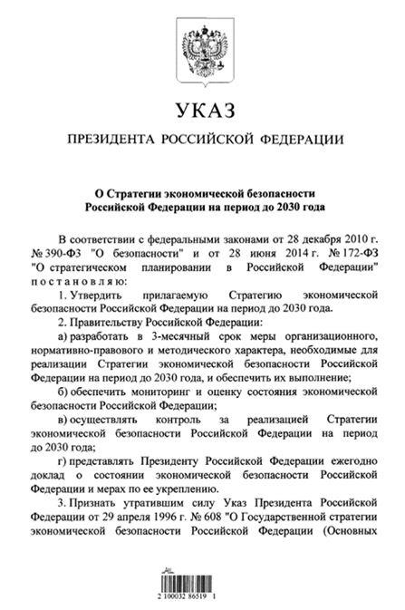
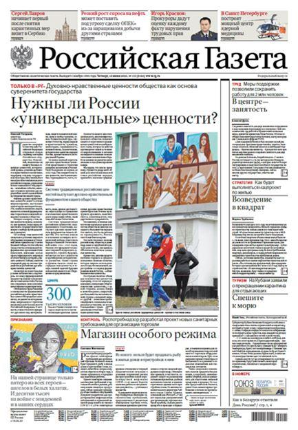

La dualité des valeurs dans un monde unipolaire qui se meurt
par Serge VOROBEV

Cet article a été conçu comme un texte intégrant la compréhension de l'ordre mondial par les conservateurs russes de pensée moderne. La particularité que l'article soit préparé pour une revue francophone a soulevé un certain nombre de questions : quelles sont les raisons des freins, voire des réticences (notamment dans les pays russophobes) par rapport à la langue russe dans le monde ? Par ailleurs, pourquoi, même en Russie, on ressent un travail conséquent, bien que relativement lent, sur le remplacement petit à petit des mots russes par leurs homologues anglais, même si rien ne le justifie ? Cela s'applique-t-il uniquement à la langue russe ou à n’importe quelle langue nationale en général dans le monde global, majoritairement anglophone ? Bien qu’elles puissent apparaître simples, ces questions en soulèvent d'autres qui peuvent également paraître anecdotiques mais nous semblent pourtant fondamentales.
Que donne la connaissance de la langue d'un autre peuple à une civilisation ? Dans le monde unipolaire néolibéral et moderne, cela signifie qu'il existe un moyen d'accéder à des informations alternatives qui ne sont pas dans le flux général d’actualité.
En dehors de cela, il est plus facile de « faire un lavage de cerveau » en créant une idéologie « incontestée ». Et dans le monde global, l'idéologie dominante est la même – l'idéologie néolibérale du capitalisme financier, pour laquelle se font les structures de propagande des médias, des agences de notation mondiales, etc. À l’origine, cette idéologie est formulée en anglais, qui a entraîné cette évolution pour qu’elle devienne la langue de la communication internationale. Des versions localisées d'éléments d'information idéologiques sont créées en les traduisant dans d'autres langues, en tenant compte des particularités locales, afin de maintenir l'efficacité du mécanisme idéologique.
De plus, nous parlons à l’aide de la langue, mais la langue parle aussi avec notre aide. Puisque la langue (on rappelle Ferdinand de Saussure) est un système de règles, un inconscient social qui s’échappe de l'esprit, mais forme notre discours et nos actions.
En dehors de la compréhension de ces choses apparemment simples, il faut faire face au quotidien à ce qui a été formulé par V. I. Lénine : « Des gens ont toujours été et seront toujours des victimes stupides de tromperie et d'autotromperie en politique jusqu'à ce qu'ils apprennent à rechercher les intérêts de certaines classes derrière déclarations morales, religieuses, politiques et sociales 1.»
Revenant à l'idéologie néolibérale dominante dans le monde moderne, il convient de noter qu'avec toute la diversité des idées dans la société, dans l’ère nouvelle, on peut en distinguer deux qui, par leurs formes englobantes, possèdent leurs propres bases de valeurs et canon culturel.
Dans les sociétés, ces deux formes vivent une compétition permanente, parfois féroce. C'est le libéralisme et le conservatisme.
Le libéralisme classique en tant que doctrine philosophique, par exemple, à l'époque de Voltaire, a peu de choses en commun avec sa dégénération du début du siècle dernier, sans parler de notre époque, devenant l'idéologie du capital financier.
Le libéralisme est une philosophie avec une histoire et une structure très profonde. Il est basé sur l'identification d'une personne et d'un individu. Pourtant à la limite logique de son évolution, le libéralisme exige la libération de l'Homme de toute forme d'identité collective. Tout d’abord l'individu, et le reste est en option. Je précise que mes discussions ultérieures sur le libéralisme ne concernent pas le libéralisme de la doctrine philosophique classique, mais seulement le néolibéralisme en tant que source de contenu idéologique et d'expansion du capitalisme financier au XXe siècle.
On peut citer des exemples d’une libération de l'identité suivants : dans l'identité religieuse et le catholicisme c’est le protestantisme qui est le libéralisme dans le christianisme, dans les sociétés de classes c’est le capitalisme qui est le libéralisme dans l'économie (pas de privilèges de classe pour assurer l'égalité des chances économiques ; le cosmopolitisme est le résultat du libéralisme dans l'identité nationale : l'individu est plus important que l'État ou la nation). Actuellement, sous la forme du néolibéralisme, il libère une personne de l'identité de genre. De plus, les bases fondamentales du modèle libéral du monde sont posées dans la conscience avant et en dehors de toute activité critique.
 Crédits: Fars News Agency, CC BY 4.0, https://commons.wikimedia.org /w/index.php?curid=87159921Au XXe siècle des états nationaux ont commencé à s'opposer à la « société globale » (plus précisément, son masque – « communauté mondiale »). Au XXIe siècle, la prochaine étape, après la libération de l'identité de genre, sera la libération de l'identité humaine, l'identité individuelle – la liberté des cyborgs, des chimères, etc., et il sera nécessaire de protéger non pas les droits des LGBTQ + mais les droits des cyborgs. Alexandre Douguine, philosophe conservateur moderne, soulève très activement le sujet indiqué dans le champ d'information russe, suggère même un nouveau terme au lieu d’un « individu » (indivisible) - « dividu » (divisible). La famille se décompose selon la même logique (justice juvénile) – puisqu'elle est aussi une forme d'identité collective. La voie de l'expansion du libéralisme s'appelle désormais un progrès (en termes synonymes : « développement durable », « numérisation »).
De manière simplifiée, le mécanisme néolibéral peut être vu à l'œuvre : limiter tout pouvoir souverain, à l'exception du pouvoir monétaire, puisque « on peut tout acheter ». Le but est unique : contrôler totalement des ressources et concentrer le pouvoir par la concentration du capital. Dans ses conditions, la lutte pour les droits des minorités est vraiment nécessaire pour qu'il restreigne les droits de la majorité afin de la scinder. Dans le même format, les points de scission patriotique en Russie sont accentués, par exemple, à travers des sujets qui ont une résonance publique : Staline, Nicolas II, Ivan le Terrible – c'est tout un champ de manipulation, où même des représentants de vues conservatrices peuvent être dupés.
Crédits: duma.gov.ru, CC BY 4.0, https://commons.wikimedia.org /w/index.php?curid=78662937La particularité de « langage » de l'idéologie néolibérale réside précisément dans le fait que, d'une part, il est très « émotionnellement sensible », mais d'autre part, il est un « attrape-nigaud » avec une compréhension logique et critique de ses composants. Comme l'a noté Aleksandr Shchipkov, homme public russe, l'existence dans l'idéologie libérale moderne de deux concepts mutuellement exclusifs – « valeurs universelles » et « pluralisme » – est un phénomène très curieux. Il est clair que le pluralisme en tant qu'universel moral ne permet pas de dériver une axiologie unifiée.
Une seule façon d'y parvenir est de revenir aux vérités morales de l'Évangile et de les reconnaître comme universellement valables pour l'Occident moderne.
Pourtant dans le contexte de la déchristianisation et par complaisance envers le politiquement correct multiculturalisme, cette thèse doit être abandonnée. Le politiquement correct lui-même est un phénomène de valeurs dans l'esprit du néolibéralisme et reflète en fait la liberté d'expression dans des conditions de censure des pensées, pour reprendre les propos de Leonid Ionin, philosophe moderne.
Le discours néolibéral contemporain contient de sérieuses contradictions. Il n'est pas intrinsèquement logique, bien qu'il soit susceptible de manifester extrinsèquement le « langage de la science » : jongler avec les statistiques, les définitions juridiques, la terminologie économique, la rhétorique des droits de l'homme, etc. Son objectif n'est pas une argumentation et une persuasion, mais un impact émotionnel sur l'auditeur. Dans la science moderne, cela s'appelle le concept de « post-vérité » (post-truth).
Prenons, par exemple, le titre de l'un des principaux ouvrages sur l'idéologie de la théorie libérale, Karl Popper, « La Société ouverte et ses ennemis ». On mesure à quel point le titre de « la société ouverte » résonne pacifiquement, voire amicalement. Mais si elle est si « ouverte » et bonne, comment et où peut-elle avoir des ennemis ? Logiquement, l'interaction avec les « ennemis » d'une telle société devrait être réduite à leur destruction. Que faire d'autre avec les ennemis ?
Un autre « talon d'Achille » du modèle néolibéral est son lien inextricable avec le mécanisme d'expansion du capitalisme financier qui, au stade actuel du développement mondial, est arrivé à son épuisement. Adam Smith a parlé de la finitude de la croissance économique dans un système fermé.
La compréhension théorique de la fin du capitalisme en raison de la finitude de son expansion à l'intérieur des frontières du globe terrestre est dans la théorie de Karl Marx. La crise économique et axiologique permanente de l’époque contemporaine n'est rien d'autre que l’aboutissement des « limites de la croissance » du capitalisme, l'impossibilité de son expansion dans le globe terrestre « achevé ». Il y a un sentiment clair que ce sujet est simplement tabou dans l'économie occidentale – dans le modèle de propagande des économistes néolibéraux, l'humanité a atteint un stade sans crise, en ayant passé sur la voie du « développement durable ». Et malgré le fait que les phénomènes de crise croissants ne sont souvent visibles qu’après coup, ce ne sont pas les recherches sur la théorie des crises, qui reçoivent la plus haute reconnaissance mais plutôt la focalisation économique étroite. Par exemple, en 2020, le prix Nobel d’économie a été décerné pour avoir « amélioré la théorie des enchères et inventé de nouveaux formats d’enchères ».
Pour toute personne sensée, il est évident que c’est un balayage des « déchets sous le tapis ». Le problème réside sur le remplacement des Sciences économiques par un substitut idéologique basé sur l'économie a abouti l'Occident néolibéral à une impasse en l'absence d'une théorie économique adaptée aux réalités modernes. Dans la presse occidentale, malgré ses préjugés idéologiques, les gros titres de « The guardian » apparaissent et parlent d'eux-mêmes : « IMF boss says global economy risks return of Great Depression »2 –de tels mots dans la rhétorique de Kristalina Georgieva, Directrice du Fonds monétaire international, ne pourrait pas être qualifiés d'optimiste.
Le programme officiel russe contient un terme important – un monde unipolaire, qui a été décrit dans la rhétorique publique par notre Président V. Poutine en 2007 lors du discours de Munich. En 2017, dans le Décret du Président No 208 du 13/05/2017 sur la sécurité économique, sont inscrites les phrases suivantes « ... En l’étape actuelle du développement mondial, des indices objectifs de destruction du monde unipolaire se manifestent clairement. En cela, le processus de transition à la multipolarité s’accompagne de la croissance de l’instabilité géopolitique et de l’instabilité du développement de l’économie mondiale et une forte escalade de la concurrence mondiale ». La Russie, en tant que pays semi-périphérique d'un monde unipolaire (selon Immanuel Wallerstein), ressent beaucoup plus vivement cette fuite de capitaux dans le cadre d'un modèle mondial unipolaire. Pourtant, les écoles économiques et les économies alternatives ont, dans le même temps, survécu en Russie. Il y a donc bien une compréhension claire tant des processus de dégradation actuels et du mécanisme de la crise actuelle3, que des moyens pour la surmonter.
Il faut accepter que les problèmes économiques et ceux des valeurs soient indissociables. L'idéologie de la société de consommation, cultivée dans le cadre du modèle néolibéral, est assez simple et tellement tentante car il est facile de s’y faire une image du « beau monde ». Le principe est simple – « croquer la vie à pleines dents », la consommation dans toutes les formes diverses – est le sens de la vie. À ce propos, ce stéréotype s'affaiblit considérablement en raison de l'épuisement du modèle financier occidental. Le bénéficiaire le plus important de la société de consommation, formé au sein de la strate élargie appelée « classe moyenne », a été confronté à un terrible problème. Il s'est habitué à vivre en utilisant les stéréotypes d'une vie bien nourrie et mesurée, dont la source économique était la redistribution des facilités de crédit d'émission et qui est arrivé à son épuisement objectif. Ici, il faut comprendre une chose simple : le fait que l’émission d'argent soit sans fin est une illusion. Ce mécanisme fonctionnait avec succès tant qu'il était possible de restructurer les dettes en réduisant la valeur du prêt et en prolongeant sa durée. Maintenant, quand les taux des banques centrales des pays développés ont été ramenés à zéro ou presque, le mécanisme est épuisé. Dès le début de l'effondrement des marchés boursiers, une vague d’argents non garantie se précipitera dans la circulation monétaire, en provoquant une inflation massive. En acquérant la compréhension (à travers le langage des circonstances de la vie, c’est évidemment la faillite des entreprises et banques, le chômage) qu'il n'y a plus aucune ressource pour assurer leur mode de vie habituel, l'instabilité dans la société ne prendra que de l'ampleur.
Un autre exemple de la vision du futur - déjà très peu attrayante –des capitalistes financiers est le camp de concentration numérique. Il n’est pas aisé, ni souhaité, d'en parler explicitement car il est beaucoup plus pratique de parler des avantages de la numérisation.
Cette année, l'adoption d'amendements à la Constitution n'a pas été un événement accidentel mais significatif en Russie. Je voudrais attirer votre attention sur l'apparition dans la Loi fondamentale des phrases importantes qui ont un sens, sans ambiguïté, traditionnel et conservateur : « DIEU » et « FAMILLE ». À la veille du vote sur la Constitution, un article de Nikolaï Patrouchev a été publié dans « Rossiskaïa Gazeta » avec le titre étoffé « La Russie a-t-elle besoin de valeurs ‘universelles’ ? »4. Le terme « universelles » dans ce contexte signifie « les valeurs du monde néolibéral occidental ». En Russie, bien que le pays soit historiquement conservateur et traditionnel, la proximité semi périphérique du monde unipolaire a tendu, depuis les années 90, à ce que ces « valeurs », érodant l'identité nationale, se développent et soient aujourd’hui activement intégrées.
Ainsi, il est clair que la Russie doit s’éloigner de telles « valeurs » et revenir vers ce qui est inscrit dans la Constitution. Ce n'est pas tant important ce qui est écrit dans les articles, mais le fait que la question de la valeur est soulevée par la rhétorique d'un homme d'État de si haut niveau. Cela n'est pas surprenant car, à l'échelle mondiale, il ne s’agit pas seulement d'une crise purement économique, mais d'un fossé culturel et historique, de la perte de principes moraux et rationnels dans la culture moderne, ce qui amène inévitablement à un déséquilibre dans l'ordre social et dans la stabilité qui en découle. La « classe moyenne », qui jusqu'à récemment pouvait être considérée comme bénéficiaire de la mondialisation, s'amincit et s'affaiblit. Se pose alors un problème : le cadre de la vision habituelle du monde s'effrite, et derrière il n'y a tout simplement aucune alternative conceptuelle.
Une remarque essentielle doit être faite : en dehors de l'orientation théocentrique, les valeurs originelles s'émasculent et se désintègrent, en se transformant en un ensemble de catégories abstraites, et peuvent être mal interprétées pour toute société dépourvue de fondement religieux.
C'est le principal avantage de l'état chrétien – il ne permet pas de légitimer le péché et la vision du monde pécheresse comme quelque chose qui peut être justifié sans exiger une condamnation. « S'il n'y a pas de Dieu, alors tout est permis » (selon Dostoïevski), car il n'y a pas de motifs absolus pour avoir au moins une sorte d'obligation – il n'y a pas une telle autorité absolue qui pourrait montrer à une personne pourquoi elle doit quelque chose à quelqu'un. Et rien, sauf la force physique brute de l'extérieur, ne peut limiter la permissivité.
Le modèle de consommation au cœur des fondements de la société, comme le montre la dynamique du développement des processus dans l'économie et la vie sociale, est une chose extrêmement fragile. Le problème essentiel est que la logique du modèle de consommation est dans une large mesure la logique contradictoire au modèle de principes moraux et éthiques.
Dans le domaine des valeurs, la numérisation totale est considérée comme la conception d'une nouvelle « église électronique » dans laquelle l'intelligence artificielle joue le rôle de « dieu », potentiellement en décidant des questions ou en retirant celles qui embarrassent. Il est tout à fait possible de dire que c'est une variante de « l'église de Satan », puisque Dieu est rejeté ici comme inutile, et avec Dieu sa Providence est également rejetée (cette dernière n'étant pas nécessaire, puisque l'intelligence artificielle calculera tout).
Cependant, comme on peut le voir d'après l'expérience de certains pays, où, en tant qu'outil de régulation de la société, les technologies de camps de concentration numérique et les systèmes d'évaluation sont mises en œuvre avec succès, il convient de noter ce qui suit. Le mécanisme de régulation à travers les principes moraux est remplacé par un système de micro-punitions numériques. Le critère de réputation d'une personne honnête est remplacé par la cote de crédit d'un esclave. Cette dernière valeur est considérée comme plus simple et plus pratique pour les calculs, elle est en dehors de la société, du monde des chiffres, et la première est exactement une évaluation publique. Tout catastrophe technologique ou attentat, coupure de courant entraînera un massacre dans une telle société, ou l'impuissance totale des citoyens « numérisés », privés de leur identité humaine habituelle.
Conclusion
En mentionnant les propos de Mikhaïl Bakhtine, philosophe russe, selon lesquels le sujet et l'objet sont faits de la même historicité, par rapport à la société et à l'histoire, une conclusion triviale est suggérée : l'histoire que nous avons maintenant a été faite par la société que nous avons, intégrant tous ses représentants positifs et négatifs. Il en va de même pour le passé : les valeurs conservatrices dominaient, mais à la suite de processus qui n'étaient pas toujours évidents pour la plupart, elles ont été remplacées par celles libérales et acceptées par la société mais heureusement pas par encore tous ses représentants.
Parmi ces derniers, je soupçonne que la majorité conçoive naturellement que le simple retour à des valeurs conservatrices sera la solution aux problèmes sociaux. Je ne pense malheureusement pas que tout soit si simple. Il est possible (et certainement nécessaire) de comprendre l'essence des valeurs et des traditions des époques passées, tout en tenant toujours compte du fait qu’il ne suffira pas de reproduire le passé pour corriger le présent. De plus, l'expérience des valeurs néolibérales de l'époque actuelle ne disparaîtra pas en une heure et laissera certainement son empreinte sur la formation d'un nouvel ordre mondial. Il s’avère donc que, dans le contexte d'un vide sémantique à l'échelle mondiale, une compréhension de l'histoire et un retour vers les valeurs traditionnelles se révèlent le seul moyen de préserver la civilisation humaine.
S.V.
RÉFÉRENCES
1. « Trois sources et trois composantes du marxisme », p. 47, Œuvres complètes, Vol. 23.

Partager cette page